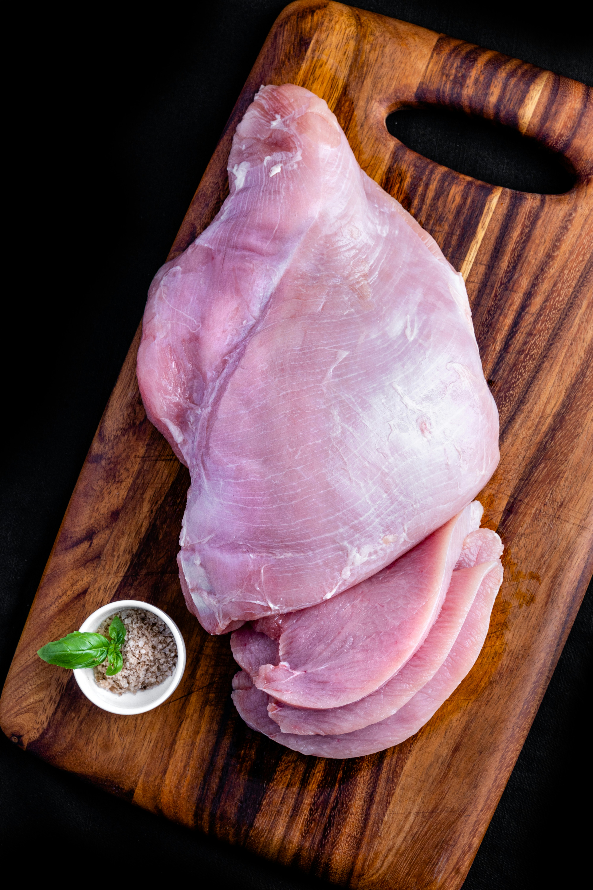
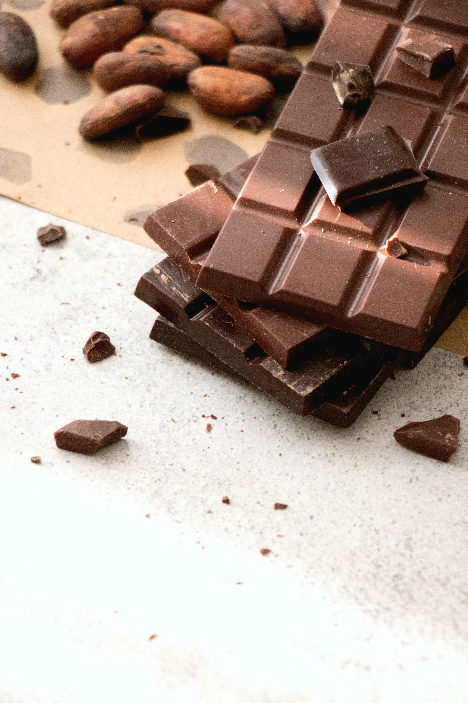

Caprese Salad Skewers
- Origin: Italy
- Source: Own Recipe
- Category: Appetizer
Transport yourself to the heart of Italy with these Caprese Salad Skewers. Each bite is a burst of freshness as the sweet cherry tomatoes, creamy mozzarella balls, and aromatic basil leaves come together on a toothpick. The balsamic glaze and extra virgin olive oil elevate the classic flavors.
Recipe Ingredients:
- Cherry tomatoes
- Mini mozzarella balls
- Basil leaves
- Extra-virgin olive oil
- Balsamic glaze
- Sea salt
- Freshly ground black pepper
- Optional: prosciutto
- Toothpicks
Recipe Steps:
- Skewer fresh cherry tomatoes, mozzarella balls, and basil leaves on toothpicks
- Drizzle them with a balsamic glaze and a touch of extra virgin olive oil.
- Sprinkle with salt and pepper
Additional Photos
Garlic Herb Roasted Chicken with Lemon Parmesan Asparagus
- Origin: Mediterranean
- Source: Own Recipe
- Category: Main Course

Embark on a culinary journey to the Mediterranean with this Garlic Herb Roasted Chicken paired with Lemon Parmesan Asparagus. The chicken, infused with garlic and aromatic herbs, boasts a golden, crispy exterior and succulent interior. The side of asparagus, tossed in olive oil, garlic, and Parmesan, adds a zesty and savory complement.
Recipe Ingredients:
- Chicken
- Garlic
- Fresh herbs
- Asparagus
- Parmesan cheese
Recipe Steps:
- Rub the chicken with a mixture of minced garlic, fresh herbs (such as rosemary and thyme), salt, and pepper
- Roast the chicken until golden brown
- On the side, toss asparagus spears with olive oil, garlic, lemon zest, and Parmesan cheese
- Roast the asparagus until tender and crisp
Additional Photos
Chocolate Ganache Tart with Fresh Berries
- Origin: France
- Source: Own Recipe
- Category: Dessert

Indulge in the decadence of French patisserie with this Chocolate Ganache Tart adorned with Fresh Berries. The buttery tart crust cradles a velvety chocolate ganache, creating a luscious and rich base. Crowned with a medley of fresh strawberries, blueberries, and raspberries, each slice is a work of art. This French-inspired dessert is a celebration of elegance and sweetness, leaving a lasting impression and satisfying the most discerning sweet tooth.
Recipe Ingredients:
- Milk chocolate chips
- Dark chocolate bars
- Fresh berries
- Chocolate tart crust
- Powdered sugar
Recipe Steps:
- Bake the tart crust
- Fill the crust with chocolate ganache and let it set
- Top the tart with a variety of fresh berries
- Sprinkle powdered sugar on top
Additional Photos
